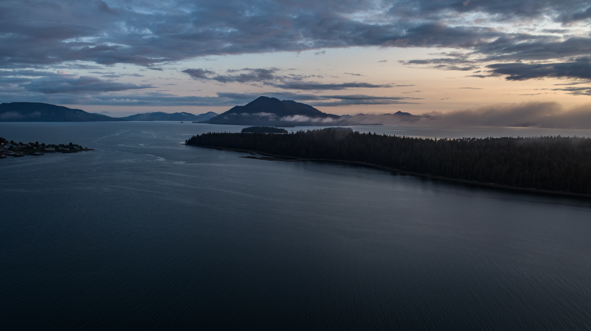

Citizen Science GIS Completes Drone Work In Alaska The Last Frontier
4 minutes read

Planning... And More Planning "The Last Frontier" had many meanings during Citizen Science GIS's most recent trip to Alaska. Aside from Alaska's notorious nickname, this was the "Last Frontier" for researchers Dr. Bo Yang and Michael Feinman. This was the last stop on a 2-1/2 week trip where they worked with partners in Bodega Bay and San Diego, California.
After many months of planning with the National Science Foundation, MarineGeo at the Smithsonian Institution, and the University of Alaska - Fairbanks, Dr. Yang and Feinman finally arrived in Craig, Alaska by a small, 8 passenger plane.
 Photo Credit: Island Air Express - Alaska
Photo Credit: Island Air Express - Alaska
Michael outside of Plane
Bo and Michael on plane As soon as Yang and Feinman arrived in Craig, Alaska, they met with Dr. Ginny Eckert and her great team of researchers. This unique team is made up of high school "EarthWatchers," undergraduates, master's, and post-doctorate students.
Dr. Ginny Erkert Explains Her Role in the NSF Collaboration Early Mornings Are Real Due to the tide schedule, a vigorous data and sampling schedule was created for the five days of fieldwork that Yang and Feinman were in Alaska. The typical call time was 3:00 A.M. throughout the week, and most eelgrass sites were accessed by a 1.5-hour car ride followed by a 45-minute boat ride.
Preliminary Site Plan for Alaska Fieldwork
Preliminary drone orthomosaic maps for Nossuk (left) and Natzuihini (right) in AK Working With The Unexpected Although six months of planning handles many details, it can't predict the unexpected. Even though Alaska's field site had a brand new drone sent prior to Citizen Science GIS's arrival, it was deemed defective. Although Yang and Feinman used a backup drone that they brought, that drone began having issues.
Below is Citizen Science GIS's #DJIFail. When dealing with the unexpected in the middle of the field, scientists improvise.
Training For Success All University of Alaska-Fairbanks members who opted-in for drone training had a great time learning a new skill. Feinman gave each member hands-on training to operate the DJI equipment. Then, Yang instructed the group on post-processing and how to utilize data collected in the field.
Dr. Yang Gives Tutorial on Drone Imagery Processing at the field house In the future, all partners that worked with Citizen Science GIS will be able to run a self-sufficient drone operation. This way, high-quality data collection can take place throughout the year.
A Photo-View Into Fieldwork Although the team worked during the early morning hours, research always came along with a smile. Documenting fieldwork through photos is extremely important for the greater good of science. Sharing this research experience with eelgrass research now could affect its survival in the future.
Natzuihini Orthomosaic
Nossuk Bay Orthomosaic A Video's Worth A _ Words If a photo's worth a thousand words, then what's a video worth? We hope you enjoy this video which compiles drone footage from Alaska.
Field Work Video The Sun Sets On Final 2019 Field Site
Sunset over the Prince of Wales Island, Alaska The University of Alaska-Fairbanks field site served as Citizen Science GIS's last field site of 2019 on the NSF eelgrass drone mapping grant. Every person who made up the team of over 5 different universities, NSF, and the MarineGEO program at the Smithsonian Institution, helped to make our world a better place. This 3 year-long collaborative project will continue during the years to come.
Keep updated with everything Citizen Science GIS! We keep our Facebook, Twitter, Instagram, LinkedIn pages up-to-date. Show us your support by following our day-to-day work on our platforms.